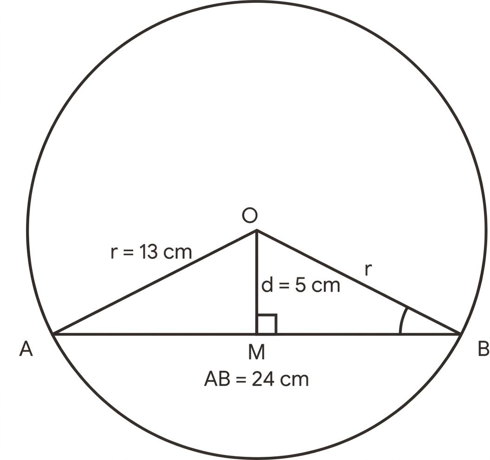
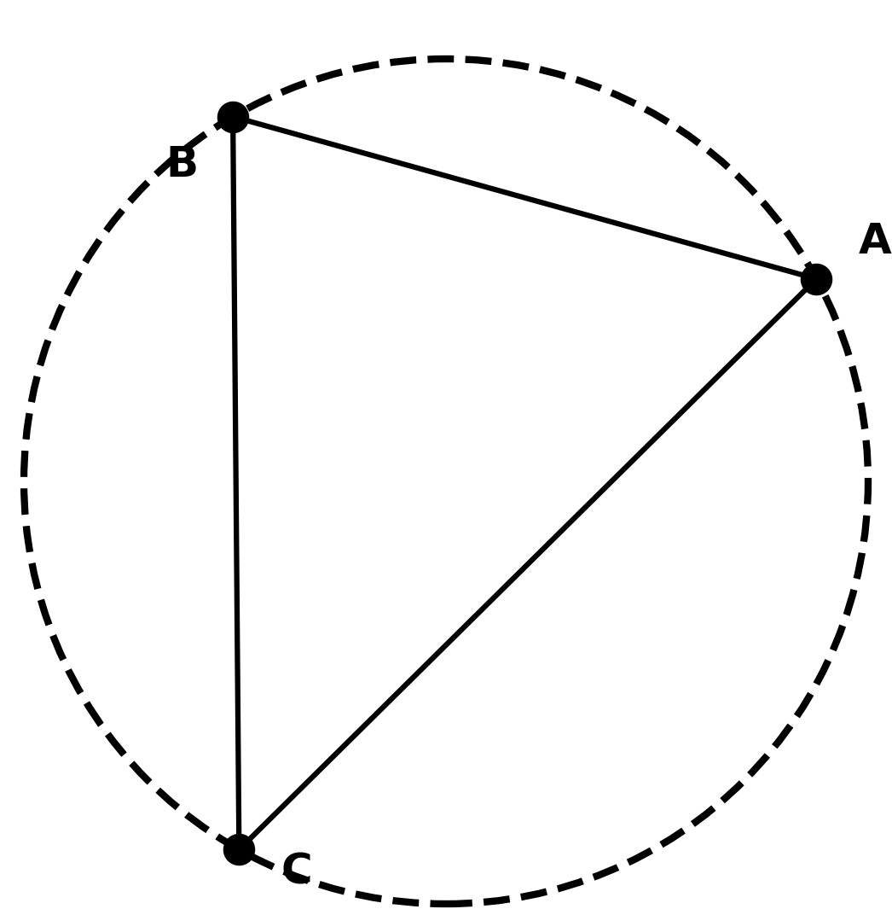
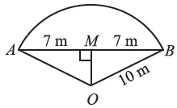
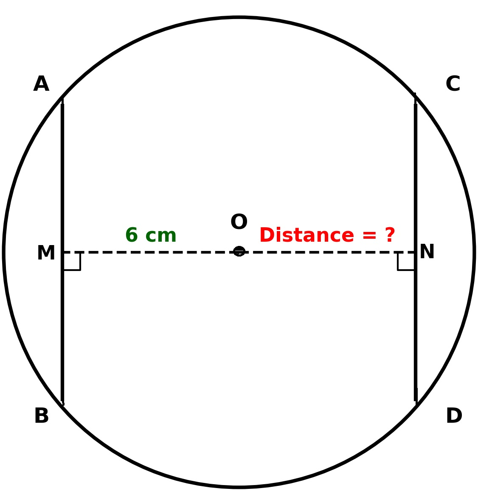
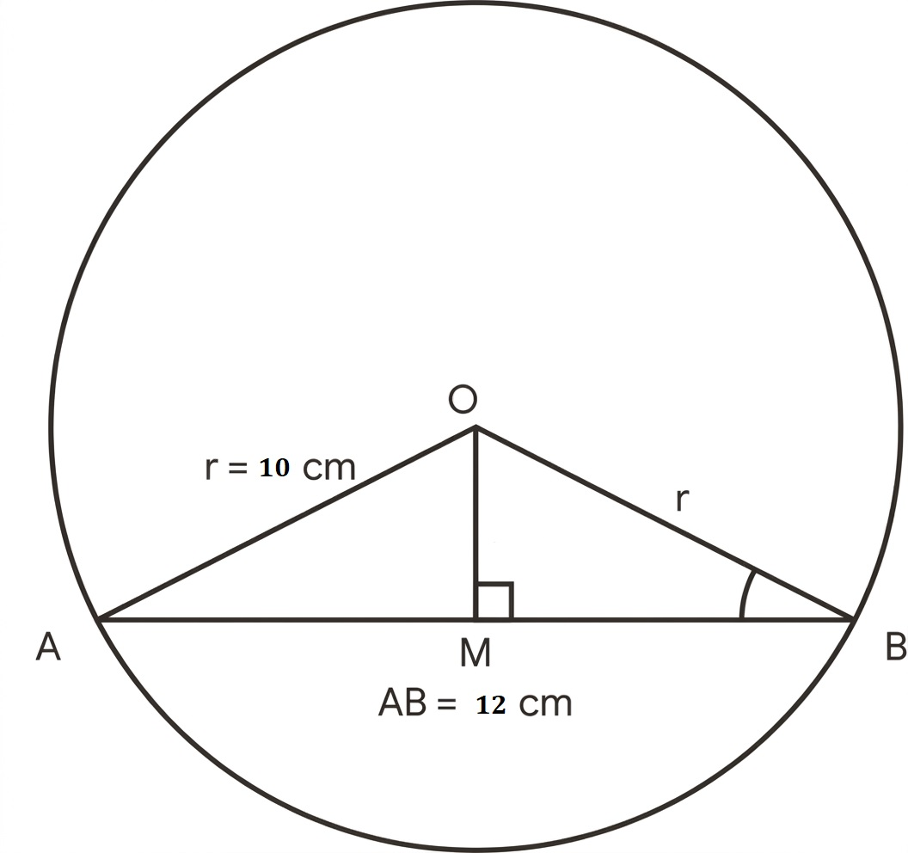
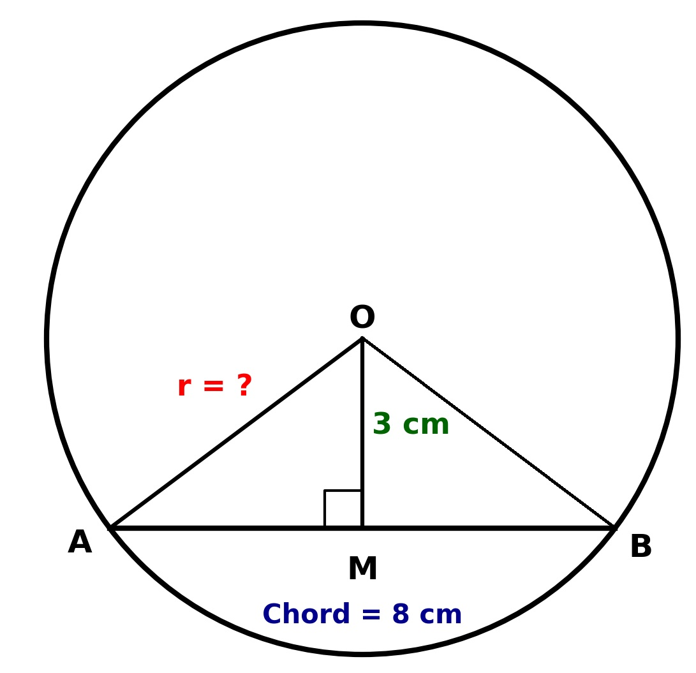
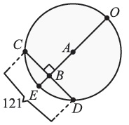
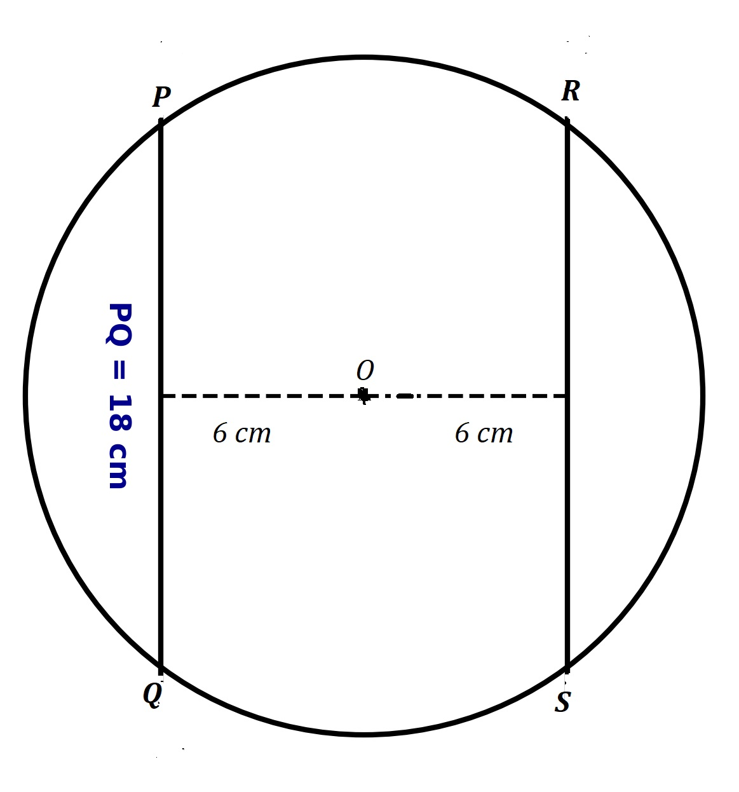
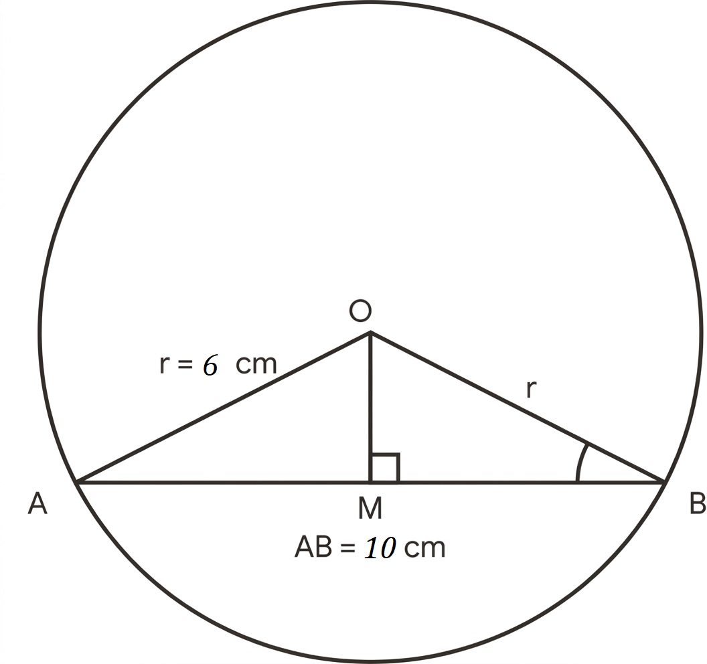
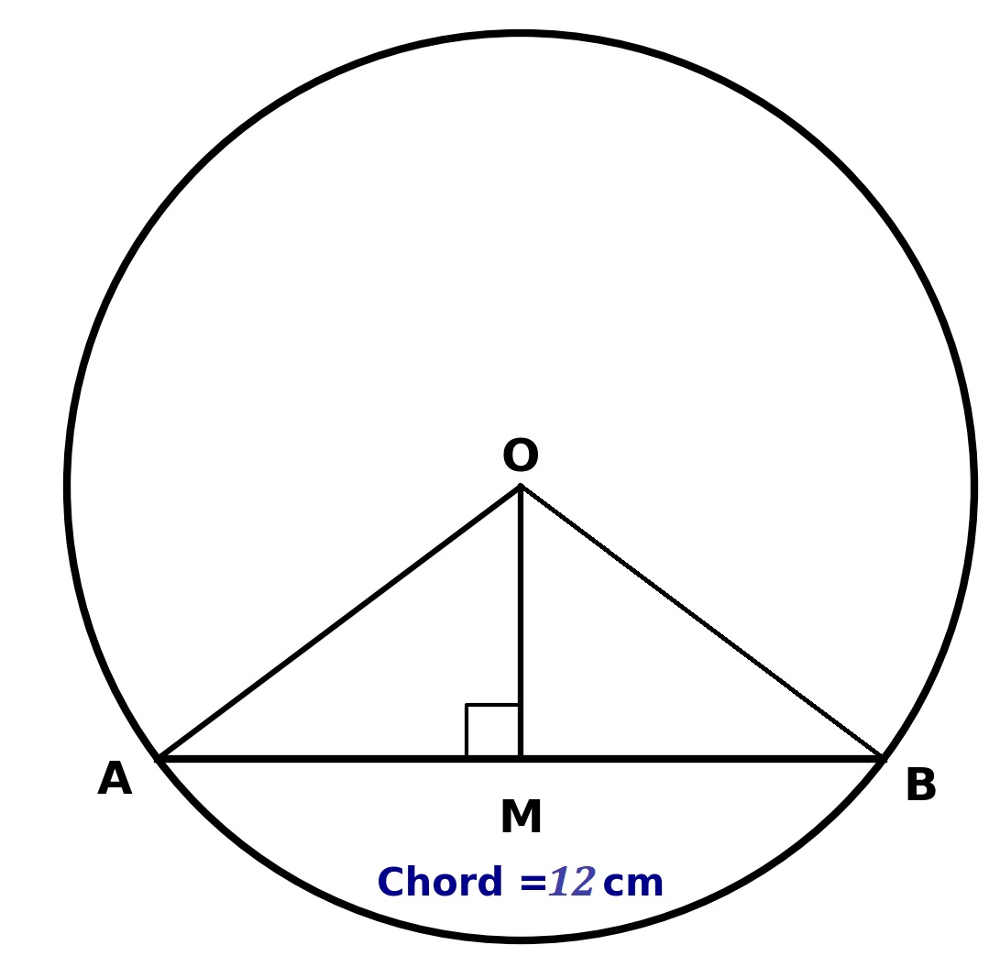

Prepared by Muhammad Tayyab, Subject Specialist Mathematics, Govt Christian High School Daska
📌 Based on National Curriculum 2023 / PECTAA Syllabus
📖 What's Inside: This exercise covers properties of chords, perpendicular from the centre, and equidistant chords. Perfect for Punjab Boards exam preparation.
If the PDF does not load, click here to view it directly on Google Drive .
📚 Related Resources – Chapter 8: Chords and Arcs
Advertisement
Class 10 Math Chapter 8 Exercise 8.1 – Chords and Arcs: Complete Guide
Chapter 8 of Class 10 Mathematics introduces students to the geometric properties of circles, specifically focusing on chords and arcs. Exercise 8.1 is the foundational exercise of this chapter, designed to help students understand and apply the key theorems related to chords. Circle geometry has practical applications in design, engineering, architecture, and manufacturing, making this a highly relevant topic.
What You Will Learn
By working through Exercise 8.1, students learn how to calculate the length of a chord given its distance from the centre, find the distance of a chord from the centre given its length, and apply the theorem that a perpendicular from the centre bisects a chord. You will also explore the concept that equal chords are equidistant from the centre and that one and only one circle can pass through three non-collinear points.
Topics Covered in This Exercise
- Perpendicular from the Centre – using the theorem that a perpendicular from the centre to a chord bisects the chord to solve right-angled triangle problems.
- Chord Length Calculations – using the Pythagorean theorem to find the length of a chord or its distance from the centre.
- Equidistant Chords – applying the theorem that two chords of a circle which are equidistant from the centre are congruent.
- Circle through Three Points – understanding that one and only one circle can pass through three non-collinear points.
Why Exercise 8.1 Is Important
Exercise 8.1 is the foundation exercise of Chapter 8. Punjab Board exam papers frequently draw short questions and objective-type questions directly from this exercise, particularly on the properties of chords and the application of the perpendicular bisector theorem. Students who master this exercise will find the rest of Chapter 8 much easier to understand.
Punjab Board Preparation
For students preparing for board exams under any of the 10 BISE Punjab boards, this exercise should be treated as compulsory practice. The theorems covered in this exercise are not just theoretical; they are heavily tested in the form of numerical problems and geometric proofs.
PECTAA Syllabus Alignment
These solved notes are aligned with the Punjab Education & Curriculum Textbook Authority (PECTAA) syllabus, following the National Curriculum 2023 framework for Class 10 Mathematics. The question numbering, formulas, and terminology match the current Punjab textbook exactly.
Exam Tips for Chords and Arcs
- Always draw a diagram and mark the centre, the chord, and the perpendicular from the centre.
- Remember that the perpendicular from the centre bisects the chord, creating two congruent right-angled triangles.
- Use the Pythagorean theorem: \(\text{Radius}^2 = \text{Distance}^2 + \text{Half-chord}^2\).
- Check your answers by substituting back into the original equation.
Common Mistakes Students Make
- Forgetting to halve the chord length when forming the right-angled triangle.
- Confusing the distance from the centre with the radius.
- Not recognizing that equal chords must be equidistant from the centre.
- Making sign errors when working with square roots.
Use the table of contents below to jump directly to any question, or scroll through the full solved exercise in order.
Given: Radius \(r = 13\text{ cm}\), distance from the centre to the chord \(d = 5\text{ cm}\).
To find: Length of the chord \(\overline{AB}\).
Proof/Calculation: Let \(O\) be the centre and \(M\) be the midpoint of the chord \(AB\). By the theorem, the perpendicular from the centre to a chord bisects it, so \(\triangle OMA\) is a right-angled triangle. Using the Pythagoras theorem:
Since \(M\) is the midpoint, the total length of the chord is:

Given: Three non-collinear points \(A, B\), and \(C\).
To find: The number of circular hoops that can pass through all three points.
Reasoning: According to the theorem, "One and only one circle can pass through any three non-collinear points."
Hence: Only one hoop can be used.

Given: Distance between lamp posts (chord length) \(AB = 14\text{ m}\), radius of the circular park \(r = 10\text{ m}\).
To find: Distance of the chord from the centre, \(\overline{OM}\).
Calculation: Let \(O\) be the centre and \(\overline{OM} \perp \overline{AB}\). \(M\) bisects \(\overline{AB}\), so \(\overline{AM} = \frac{14}{2} = 7\text{ m}\). In the right-angled \(\triangle OMA\):

Given: Chord \(AB = 10\text{ cm}\), Chord \(CD = 10\text{ cm}\), Distance from centre to \(AB\) is \(6\text{ cm}\).
To find: Distance from centre to \(CD\).
Reasoning: By the theorem, "If two chords of a circle are congruent, then they will be equidistant from the centre."
Since \(AB = CD\), they must be at the same distance from the centre.
Answer: The distance from the centre to \(CD\) is \(6\text{ cm}\).

Given: Distance between holes (chord length) \(AB = 12\text{ cm}\), radius \(r = 10\text{ cm}\).
To find: Perpendicular distance from the centre to \(AB\), \(OM\).
Calculation: Let \(OM \perp AB\). Then \(M\) is the midpoint, so \(AM = \frac{12}{2} = 6\text{ cm}\). In right-angled \(\triangle OMA\):

Given: Chord length \(AB = 8\text{ cm}\), distance from centre \(OM = 3\text{ cm}\).
To find: Radius \(r\).
Calculation: The perpendicular from the centre bisects the chord, so \(AM = \frac{8}{2} = 4\text{ cm}\). In right-angled \(\triangle OMA\):

Given: From the figure, \(\overline{CD}\) is a chord and \(\overline{OB}\) is a perpendicular from the centre to the chord \(\overline{CD}\). Thus, \(B\) is the midpoint of \(CD\). Also, \(m\overline{CD} = 121\) units and \(m\overline{BC} = 3x\) units.
To find: Value of \(x\).
Calculation: Since \(B\) bisects \(\overline{CD}\), we have:

Given: Distance of \(PQ\) from centre \(= 6\text{ cm}\), Distance of \(RS\) from centre \(= 6\text{ cm}\). Length of \(PQ = 18\text{ cm}\).
To find: Length of \(RS\).
Reasoning: By the theorem, "Two chords of a circle which are equidistant from the centre are congruent." Since both chords are at the same distance (\(6\text{ cm}\)) from the centre, they must be equal in length.
Hence, the length of chord \(RS\) is \(18\text{ cm}\).

Given: Chord length \(\overline{AB} = 10\text{ cm}\), radius \(r = 6\text{ cm}\). The line from the centre cuts the chord at a right angle, meaning it bisects it.
To find: Length from the centre to the chord \(OM\).
Calculation: Half-chord \(\overline{AM} = \frac{10}{2} = 5\text{ cm}\). In right-angled \(\triangle OMA\):

Given: Chord \(\overline{AB} = 12\text{ cm}\). A perpendicular is drawn from the centre, which bisects the chord.
To find: Length of each segment after bisecting.
Calculation: According to the theorem, "The perpendicular from the centre of a circle on a chord bisects it."
Therefore, the point \(M\) is the midpoint of the chord \(\overline{AB}\). Since \(M\) bisects \(\overline{AB}\), the chord is divided into two equal segments:

📈 Key Concepts & Quick Revision
📐 Circle Geometry Formulas & Theorems
- Perpendicular from Centre: The perpendicular drawn from the centre of a circle to a chord bisects the chord.
- Equidistant Chords: If two chords of a circle are congruent (equal in length), then they are equidistant from the centre. Conversely, chords equidistant from the centre are congruent.
- Pythagorean Relationship: In the right-angled triangle formed by the radius, the distance from the centre, and half the chord: \[ \text{Radius}^2 = \text{Distance}^2 + (\text{Half-chord})^2 \]
- Three Non-collinear Points: One and only one circle can pass through three non-collinear points.
📝 Important MCQs for Practice
1. A perpendicular drawn from the centre of a circle to a chord always:
2. Two chords of a circle are equidistant from the centre. If one chord is \(15\text{ cm}\), the other is:
3. A chord of length \(24\text{ cm}\) is at a distance of \(5\text{ cm}\) from the centre. The radius of the circle is:
4. How many circles can pass through three non-collinear points?
5. If a chord of length \(16\text{ cm}\) is bisected by a perpendicular from the centre, the length of each half is:
🏆 Board Exam Tips & Strategy
- Always draw a neat diagram to visualize the circle, chord, and perpendicular from the centre.
- Identify the right-angled triangle formed by the radius, the perpendicular distance, and half the chord.
- Do not forget to multiply the half-chord length by 2 to get the full chord length at the end of the calculation.
- When a question involves equal chords, immediately apply the theorem that they are equidistant from the centre to save time.
❓ Frequently Asked Questions
What is taught in Exercise 8.1 of Class 10 Math Chapter 8?
Exercise 8.1 covers the fundamental properties of chords and arcs. It includes problems on calculating the length of a chord given its distance from the centre, finding the distance of a chord from the centre, and applying the theorem that a perpendicular from the centre bisects a chord.
How many questions are there in Chapter 8 Exercise 8.1?
Exercise 8.1 contains 10 main questions covering various scenarios and calculations related to chord lengths, distances from the centre, and the properties of equidistant chords.
What is the most important theorem in Exercise 8.1?
The most important theorem is: "The perpendicular from the centre of a circle to a chord bisects the chord." This theorem allows us to form a right-angled triangle and use the Pythagorean theorem to solve most of the problems in this exercise.
How do you find the distance of a chord from the centre?
Draw a perpendicular from the centre to the chord (which bisects it), forming a right-angled triangle. Use the Pythagorean theorem: \(\text{Distance} = \sqrt{\text{Radius}^2 - (\text{Half-chord})^2}\).
Is this solution according to the PECTAA syllabus?
Yes, these solutions are prepared strictly according to the PECTAA / National Curriculum 2023 syllabus for Class 10 Mathematics.
Is this Exercise 8.1 solution valid for all Punjab Boards?
Yes, the content follows the unified Punjab textbook and is applicable to students of all 10 BISE Punjab boards.
Are solved PDF notes available for Exercise 8.1?
Yes, a complete solved PDF for Exercise 8.1 is embedded at the top of this page and is available to download for free.
Who prepared these Class 10 Math Chapter 8 notes?
These notes were prepared by Muhammad Tayyab, Subject Specialist Mathematics at Govt Christian High School Daska, for Hira Science Academy.